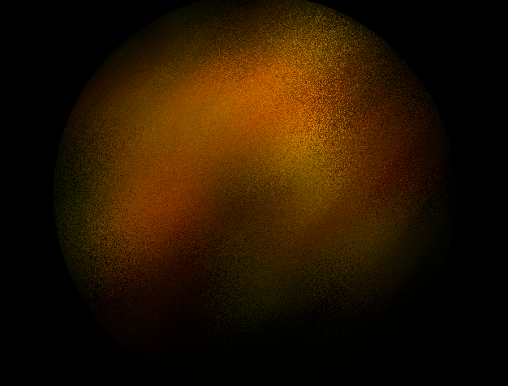
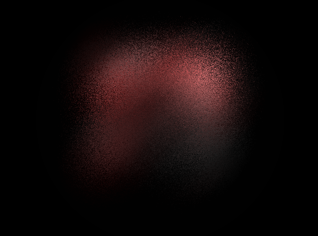
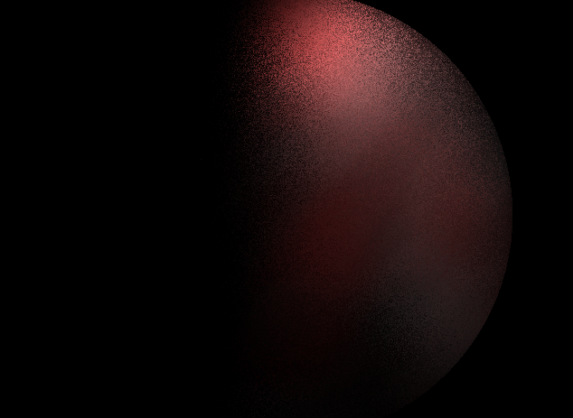
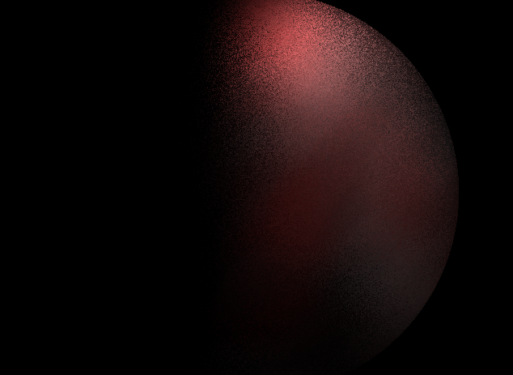
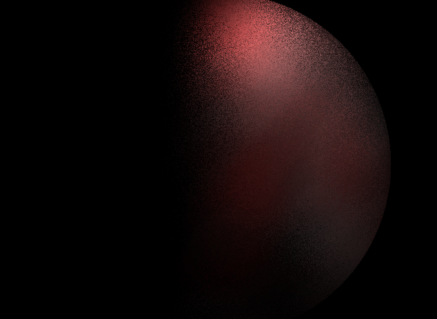
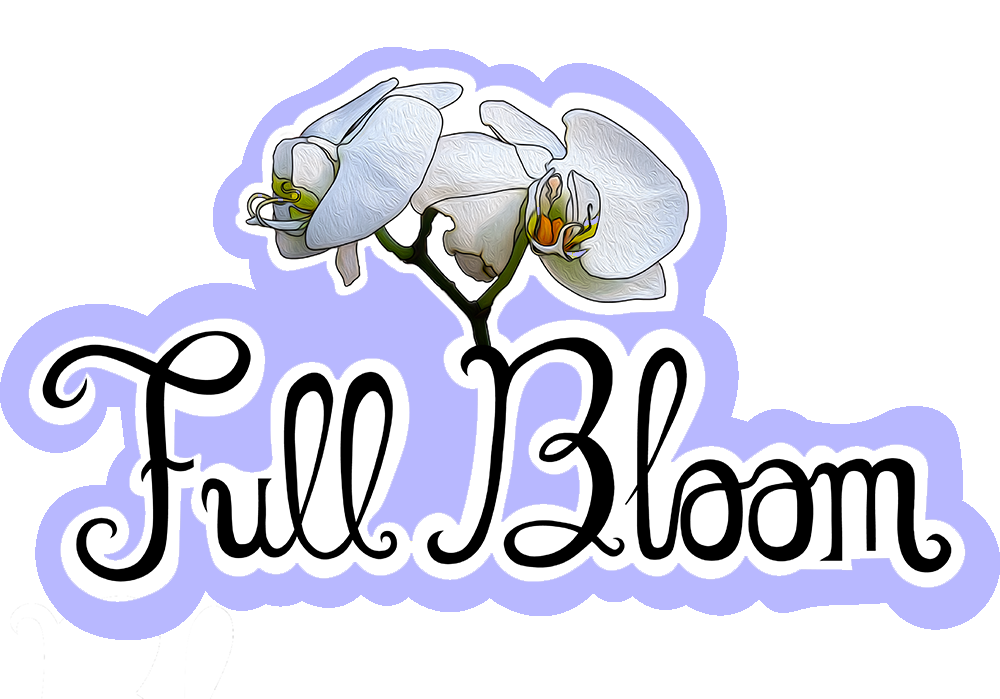
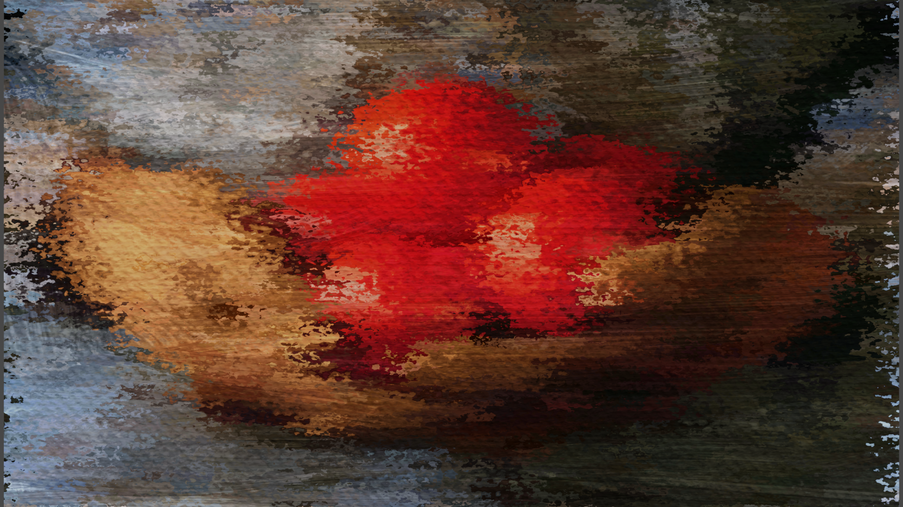

Volumetric Photon Mapper
Implementation:
• Uses Sphere as basic volume container. • Varying Step size to avoid "density rings".
• Uses a density function to determine transperency and also if a photon is absorbed or scattered.
• Designed for integration with non photon mapped scene with transparency.
Example Results:


 


Full Bloom: VR music experiance

Implementation:
• Uses Unity game engine and C# scripts. • Link to website can be found here: https://fullbloomgame.com/
Painted Post-Processing Effect
Implementation:
• Implemented in both glsl and osl. • Uses various noise functions and base textures to produce a convincing paint like look.
Example Results:
